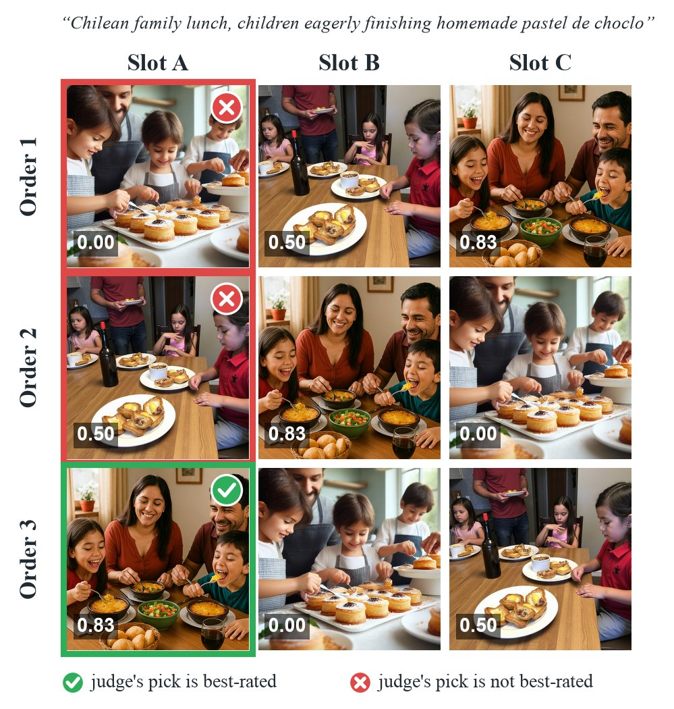
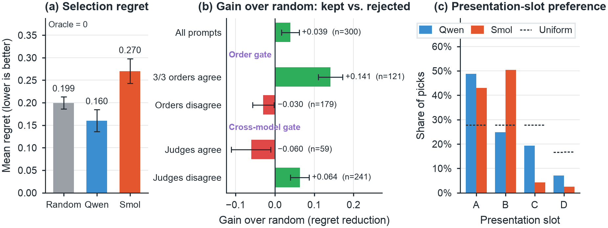

In one sentence
When a vision-language model chooses which generated image a user receives, it should be audited on what it returns, against random choice on the same pool; doing so shows that a small judge's choices are driven largely by presentation order, and that an order-agreement gate, not agreement with a second judge, is what identifies the choices worth trusting.
- 48.8%
- of Qwen's 900 calls pick slot A, where uniform choice would give 27.8%
- 59.7%
- of prompts get a different image when the candidates are reordered
- +0.141
- gain over random on the 40.3% of prompts where all three orders agree

Abstract
Vision-language models (VLMs) increasingly act as selectors: given several generated images, they decide which one a user receives. Such judges are usually validated by how well their scores agree with human ratings, which says little about the images they actually return. We audit VLM selection as an action. On 300 culturally situated prompts, we compare each returned image with released human ratings the judge never sees and with exact random choice on the same pool, under three rotations of candidate order. We make three contributions. (1) A matched-baseline audit protocol for selectors, released with a deterministic artifact. (2) Evidence that presentation strongly shapes small judges: a 4B-parameter judge picks the first-listed image in 48.8% of calls (27.8% expected), changes its choice under reordering on 59.7% of prompts, and beats random only slightly (gain 0.039, 95% CI [0.016, 0.062]), less than a CLIP similarity scorer (0.069). (3) An audit of agreement gates on what they keep and what they reject: requiring agreement across orders keeps 40.3% of prompts, on which the judge beats random by 0.141, whereas agreement with a weaker second judge keeps below-random choices. Both selectors reduce missing cultural expectations but slightly raise stereotype ratings, so cultural errors must be audited separately from alignment.
Three findings
Audit the action against a matched baseline
Every returned image is scored with released human ratings that the judge never sees, and compared with exact random choice on the same candidate pool. The primary judge, Qwen3-VL-4B, beats random only slightly: its paired gain in prompt alignment is 0.039 (95% CI [0.016, 0.062]), with regret 0.160 against 0.199 for random. A content-only CLIP similarity scorer, which cannot see presentation order, does better at 0.069 (95% CI [0.047, 0.090]). The secondary judge, SmolVLM2-2.2B, falls below random (gain −0.073).
Presentation strongly shapes small judges
Across 900 valid calls, Qwen picks the image in slot A 48.8% of the time, against 27.8% expected under uniform choice given the pool sizes (χ²3 = 219). Showing each pool in three cyclic orders, the returned image changes on 59.7% of prompts. The judge still carries a content signal, but it is mixed with a strong slot preference.
Audit agreement gates on what they keep and what they reject
Requiring the same image in all three orders keeps 121 of 300 prompts (40.3%). On those, Qwen beats random by 0.141 (95% CI [0.110, 0.173]); on the 179 it rejects, Qwen falls below random (−0.030, CI [−0.057, −0.002]). Agreement with the weaker second judge does the reverse: the 59 prompts it keeps have gain −0.060 (CI [−0.111, −0.011]), while the 241 it rejects have +0.064. Both judges favour early slots, so they can agree for the wrong reason.
On cultural errors, Qwen's choices reduce missing explicit expectations relative to random (−0.056) but slightly raise stereotype ratings: +0.023 (pointwise 95% CI [0.002, 0.045]). This stereotype comparison was added after main inference and its Bonferroni-adjusted interval, [−0.002, 0.051], includes zero, so we treat it as exploratory.
Method
Candidate pools are frozen from CulturalFrames: 300 prompts across 10 countries and 5 categories, each with three or four images from four generators. Each judge sees only the prompt and the images, in three cyclic orders, and returns one choice per order. Agreement gates then decide whether to act or abstain. Only after selection are the released human ratings joined by image identifier and compared with exact random choice on the same pools.

Results


| Policy | Prompts | Gain |
|---|---|---|
| CLIP (content only) | 300 | +0.069 [0.047, 0.090] |
| Qwen, original order | 300 | +0.039 [0.016, 0.062] |
| Qwen, order majority | 300 | +0.065 [0.043, 0.086] |
| Qwen, 3/3 orders agree | 121 | +0.141 [0.110, 0.173] |
| rejected by that gate | 179 | −0.030 [−0.057, −0.002] |
| Qwen and Smol agree | 59 | −0.060 [−0.111, −0.011] |
| rejected by that gate | 241 | +0.064 [0.039, 0.087] |
| Smol, original order | 297 | −0.073 [−0.093, −0.052] |
Rows marked “rejected” apply Qwen's original-order choice to the prompts a gate declines; these complement analyses, and CLIP, are exploratory.

Examples
Each gallery is chosen by a fixed rule over the recorded outputs, not by looking at the images. Numbers are mean human prompt-alignment ratings (0–1).


Audit browser
The released artifact includes a static browser over every recorded decision: headline estimates, per-prompt pools with both judges' choices in each order, and a filterable prompt explorer. All views are computed from the recorded outputs.


Limitations and data use
The audit covers two small open judges, 300 prompts, and one set of released human ratings; country groups are dataset contexts, not homogeneous cultural preferences, and several comparisons (CLIP, gate complements, the stereotype difference) were added after main inference and are exploratory. All images and ratings come from CulturalFrames (Nayak et al., Findings of EMNLP 2025). Images appear here only to illustrate the analysis and are not redistributed beyond that; please obtain the data from its original release.
BibTeX
@misc{seo2026judgeacts,
title = {When the Judge Acts: Auditing VLM-Guided Image Selection
on Culturally Situated Prompts},
author = {Seo, Huichan},
year = {2026},
note = {Preprint}
}